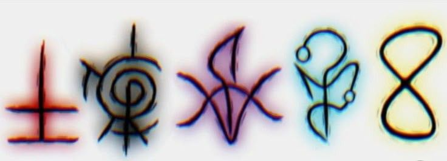

Ordem Paranormal é um universo de horror criado por Cellbit que começou como um RPG de mesa.
A história acompanha a Ordo Realitas, uma organização secreta que investiga e combate ameaças sobrenaturais para proteger a humanidade.
O mundo real é separado do "Outro Lado" por uma barreira invisível chamada Membrana. O que enfraquece essa barreira é o Medo humano. Quanto mais assustada uma população fica, mais fina a membrana se torna, permitindo que monstros e rituais invadam a nossa realidade.
O paranormal é dividido em forças que regem o Outro Lado:
